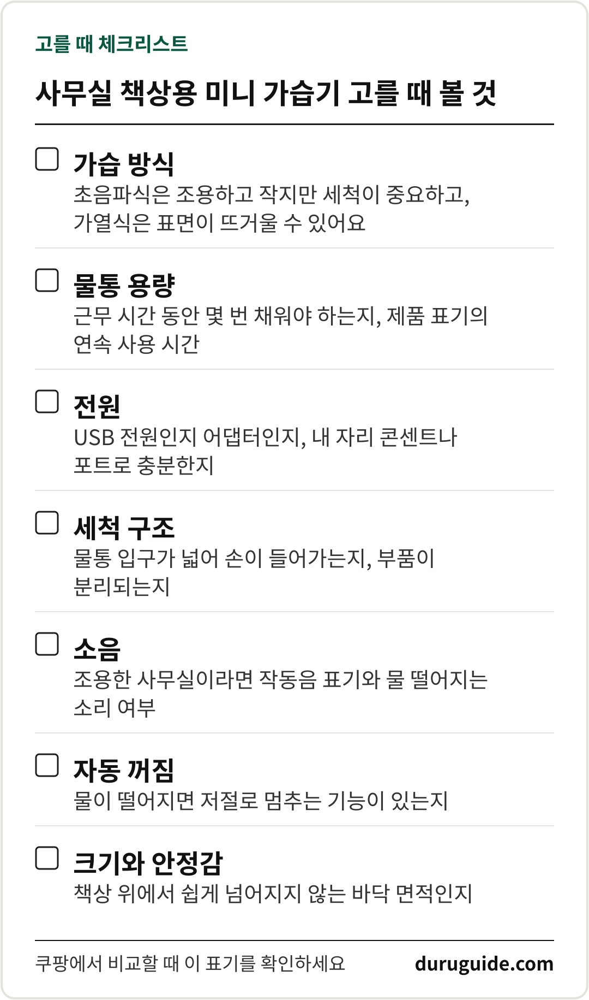

사무실 책상용 미니 가습기 고를 때 볼 것
안 사도 되는 경우
물을 자주 마시고 책상에 물컵이나 젖은 수건을 두거나 난방기 바람 방향만 바꿔도 건조함이 줄었다면 살 필요는 없어요.
이런 상황이죠
겨울에 사무실 난방이 돌기 시작하면 오후쯤 눈이 뻑뻑하고 입술이 마르는 느낌이 들어요. 사무실 전체 가습기는 내 마음대로 켜고 끄기 어렵고, 자리는 좁아서 큰 제품을 둘 곳도 없지요. 그래서 책상 위에 올려 두는 작은 가습기를 찾게 되는데, 막상 보면 초음파식, 가열식, 자연기화식이 섞여 있고 크기와 물통 용량도 제각각이라 무엇을 기준으로 골라야 할지 헷갈려요.
왜 생기나
난방을 하면 실내 온도는 오르지만 공기 속 수분의 양은 그대로라서 상대습도가 낮아져요. 사무실은 창문을 잘 열지 않고 냉난방기가 오래 돌아가서 건조함을 더 크게 느끼기 쉬워요. 책상용 가습기는 방 전체 습도를 크게 바꾸기보다는 내 자리 주변에 수분을 보태는 정도로 생각하는 게 맞아요. 작은 제품 하나로 사무실 습도가 확 오르길 기대하면 실망할 수 있어요.
사기 전에 먼저 해볼 것
- 물 마시는 양부터 챙겨요. 자리에 물컵을 두고 자주 마시는 것만으로도 건조한 느낌이 덜할 수 있어요.
- 젖은 수건이나 물컵을 둬요. 책상 한쪽에 물을 담은 컵이나 살짝 적신 수건을 두면 돈 들이지 않고 주변에 수분을 보탤 수 있어요.
- 바람 방향을 확인해요. 난방기 바람이 얼굴로 바로 온다면 자리 배치나 바람 방향만 바꿔도 훨씬 나아져요.
- 사무실 규칙을 확인해요. 전기제품 사용이나 개인 가습기에 대한 규칙이 있는 곳도 있어요. 옆자리 서류나 전자기기에 물방울이 닿지 않을지도 생각해 보세요.
이렇게 해서 불편함이 줄었다면 굳이 살 필요는 없어요.
고를 때 체크리스트
| 확인 항목 | 보는 기준 |
|---|---|
| 가습 방식 | 초음파식은 조용하고 작지만 세척이 중요하고, 가열식은 표면이 뜨거울 수 있어요 |
| 물통 용량 | 근무 시간 동안 몇 번 채워야 하는지, 제품 표기의 연속 사용 시간 |
| 전원 | USB 전원인지 어댑터인지, 내 자리 콘센트나 포트로 충분한지 |
| 세척 구조 | 물통 입구가 넓어 손이 들어가는지, 부품이 분리되는지 |
| 소음 | 조용한 사무실이라면 작동음 표기와 물 떨어지는 소리 여부 |
| 자동 꺼짐 | 물이 떨어지면 저절로 멈추는 기능이 있는지 |
| 크기와 안정감 | 책상 위에서 쉽게 넘어지지 않는 바닥 면적인지 |
이런 분께는 맞지 않아요
방 전체나 넓은 공간의 습도를 올리고 싶은 분께는 용량이 부족해요. 매일 물통을 비우고 씻을 여유가 없다면 오히려 위생이 걱정될 수 있어요.
쓸 때 주의하세요
물통에 물을 오래 담아 두면 물때와 세균이 생기기 쉬우니 매일 물을 갈고 자주 씻어 주세요. 노트북이나 서류 가까이에서 분무가 바로 닿지 않게 두고, 전원 선 주변에 물이 흐르지 않게 해 주세요.
추천 제품 찾기
먼저 전원을 USB로 쓸지, 근무 시간 동안 몇 번 물을 채울 수 있을지를 정해 두세요. 그다음 쿠팡에서 가습 방식, 물통 용량, 연속 사용 시간, 자동 꺼짐, 분리 세척 가능 여부 표기를 비교해 보시면 좋아요. 현재 가격은 쿠팡에서 확인해 주세요.

위 표의 표기를 비교해 보세요.
현재 가격은 쿠팡에서 확인해 주세요.
이 포스팅은 쿠팡 파트너스 활동의 일환으로, 이에 따른 일정액의 수수료를 제공받습니다.